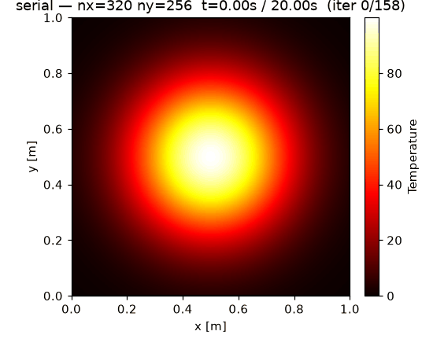
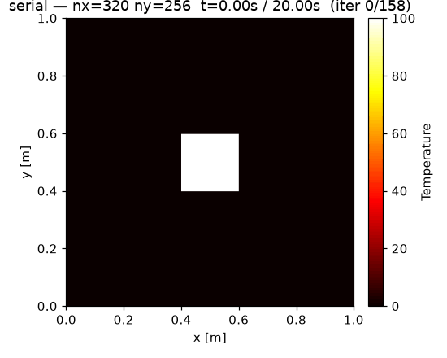
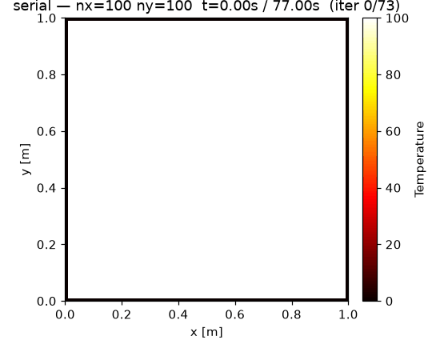

RustpyBench: A Comparative Benchmark Python versus Rust on Numerical Solving of the Heat Equation
RustpyBench is a project done for a course Advanced programming techniques at FTN. It compares how well python and rust ftcs heat equation solvers parallelize by analyzing strong and weak scaling.
Project Structure
python/
core/ rustpy_bench.core — shared library for python solvers
serial/ heatpy — serial NumPy reference solver
multi-processing/ heatpy-mp — multiprocessing (shared-memory) solver
viz/ heatviz — heatviz-scaling / heatviz-field CLIs for generating plots
rust/
core/ rustpy-bench-core — shared library for rust solvers (mirrors python/core)
serial/ heatrs — serial solver (packaged as a Python entry point via maturin)
multi-threading/ heatrs-mt — multi-threaded solver (also maturin pakcage)
scripts/
strong_scaling.py driver: fixed problem size, sweeps core/thread count
weak_scaling.py driver: per-worker problem size held constant, grid grows with workers
_common.py shared subprocess/solver-lookup helpers
experiment.toml single source of truth for equation, initial condition, and
scaling parameters — read by both the Python and Rust sides
results/ report.typ / report.bib (Typst report) + generated assets
(plots, scaling_tables.txt, and the strong.h5 / weak.h5
benchmark outputs, once you've run the experiments)
docs/ specification, proposal, and scaling background notes
Every solver (heatpy, heatpy-mp, heatrs, heatrs-mt) exposes the same CLI shape
(--nx --ny --t --out --snapshot-every --run-id, plus --workers/--threads for the
parallel variants) and writes its timing and the temperature-field snapshots into an
HDF5 group addressed as path/to/file.h5#/group/path. This is what lets one set of
Python driver scripts (scripts/*.py) benchmark all four variants identically.
Quickstart
Prerequisites
- uv (Python package/venv manager)
- A Rust toolchain (version pinned in
rust-toolchain.toml;rustupwill fetch it automatically) libhdf5-devandpkg-config(needed to build the Rusthdf5crate and potentially theh5pypackage), andmake
sudo apt install libhdf5-dev pkg-config make build-essential
Install / build everything
make install # uv sync --locked --dev — builds heatpy, heatpy-mp, heatviz,
# and (via maturin) the heatrs / heatrs-mt Rust binaries,
# all placed on .venv/bin
(make dev does the same without --locked, if you want uv to re-resolve versions.)
Run the experiments
Parameters (grid sizes, t_end, core/thread counts, repetitions) come from
experiment.toml — edit it once and both drivers below pick it up.
make strong # -> results/strong.h5
make weak # -> results/weak.h5
Each driver runs the serial baseline plus every core/thread count in
experiment.toml, [experiment].repetitions times, and appends every run into
the output HDF5 file under /strong/<variant>/nx{NX}_ny{NY}/cores{N}/<run> (or
/weak/...). Re-running is additive — delete results/strong.h5 /
results/weak.h5 first if you want a clean run.
You can override anything the drivers accept directly:
make strong ARGS="--reps 5 --cores 1 2 4 --variants heatpy heatpy-mp"
make weak ARGS="--out results/weak_dev.h5 --snapshot-every 50"
Visualize the results
make viz # heatviz-scaling --strong results/strong.h5 --weak results/weak.h5 --out-dir results/assets
writes strong_python.svg, strong_rust.svg, weak_python.svg, weak_rust.svg,
and scaling_tables.txt into results/assets/. Extra args pass straight through
the same way:
make viz ARGS="--out-dir results/assets_v2"
To render an individual run's temperature field as a GIF or a single PNG frame:
make field ARGS="--h5 results/strong.h5#/strong/heatrs/nx512_ny512/cores1 --gif results/assets/heatrs.gif"
make field ARGS="--h5 results/strong.h5#/strong/heatpy/nx512_ny512/cores1 --frame -1 --png results/assets/heatpy_last.png"
Everything at once
make experiments # strong + weak + viz
Cleaning up
make clean # caches, build artifacts
make clean-all # + .venv and generated *.h5 / *.pdf
Results
The report and resulting assets from my experiment run can be found at results/2026-07-05. Below are example gifs generated from all three supported initial conditions:
| gaussian | hot square | uniform |
|---|---|---|
 |
 |
 |